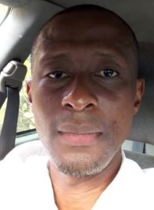

Richard Sam | WDD 130
Hello! My name is Richard Sam, and I hail from the vibrant city of Port Harcourt in Nigeria. From a young age, I developed a deep passion for reading and exploring the vast realm of knowledge that the world wide web has to offer. This fascination with learning has fueled my desire to pursue my current course of study, where I am committed to putting in the hard work required to achieve my goals. Growing up in Port Harcourt, I was exposed to a rich tapestry of cultures, and this has greatly influenced my worldview and my commitment to embracing diversity. As I journey through life, I aspire to not only expand my own horizons but also contribute positively to my community and society at large. With a strong determination to excel in my chosen field and a love for continuous learning, I am excited about the opportunities that lie ahead on my path to success.